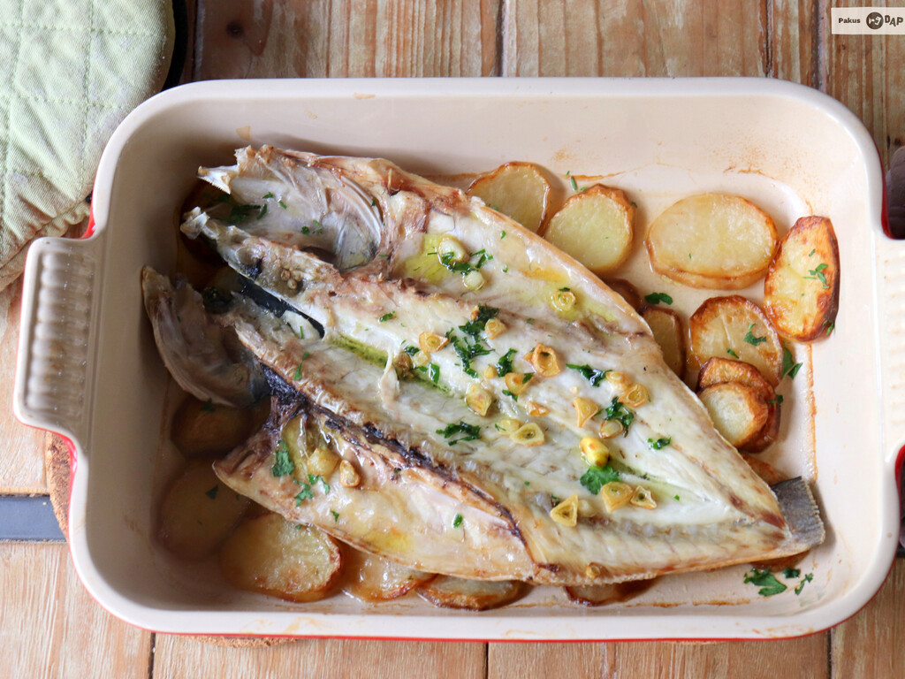

Receta de Lubina a la espalda con patatas

Descripción:
Pocas recetas de pescado le gustan tanto a mi mujer como la lubina a la espalda con patatas, por lo que la preparamos con bastante frecuencia como alternativa a la lubina a la sal. Con una lubina de un kilo aproximadamente, dos patatas y dos dientes de ajo, vamos a preparar, de manera sencilla, un plato para disfrutar.
Ingredientes (Para 2 personas):
- Lubina..........1kg
- Patata..........3
- Agua............125ml
- Diente de ajo...2
- Vino Blanco.....125ml
- Aceite de Oliva
- Sal
- Perejil
Pasos:
- Pelamos las patatas y las cortamos en discos de aproximadamente dos o tres milímetros de grosor. Los extendemos en una fuente de horno, sazonamos al gusto y regamos con un hilillo de aceite de oliva virgen extra. Horneamos durante 12 minutos a 180ºC con calor arriba y abajo. Mientras las patatas se van horneando, limpiamos bien la lubina, repasando y retirando alguna telilla que pueda tener, la secamos bien por dentro y la sazonamos al gusto.
- Cuando las patatas empiezan a dorarse, abrimos el horno y colocamos la lubina encima de las patatas con la parte de la piel hacia abajo, sobre éstas. Si no cabe la lubina podemos retirar la cabeza.
- Agregamos otro hilito de aceite de oliva por encima del pescado, y medio vaso de vino blanco y otro medio de agua por encima de las patatas. Horneamos otros diez o doce minutos para que se haga el pescado y las patatas absorban el líquido.
- Mientras se termina de hacer el pescado, hacemos la ajada. Para ello fileteamos los dientes de ajo y los doramos en tres o cuatro cucharadas de aceite de oliva. Cuando tengan un bonito color, apagamos el fuego y añadimos un poco de perejil picado. Sacamos la lubina del horno, volcamos el contenido de la sartén por encima del pescado y llevamos a la mesa, sirviendo en la misma fuente en que lo hemos horneado.
Volver a la página principal